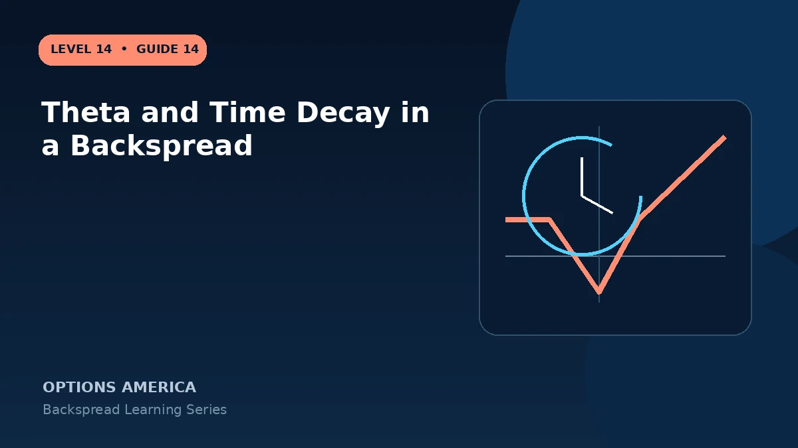

Understand why a ratio backspread can have negative theta even when it opens for a credit and how decay changes by price.
Quiet market
When price remains far from the long options, their combined time value can decay faster than the short option. The spread may lose mark-to-market value even if a small credit remains possible at expiration.
Inside the loss valley
Near the long strike, the short option is valuable and the extra long option has not created enough intrinsic value. Passing time can lock the position closer to maximum loss.
Beyond the long strike
After a large move, intrinsic value and positive gamma may dominate theta. The position behaves increasingly like one net long option in the target direction.
Use a time exit
If the catalyst passes or the expected move fails to appear, reassess before long premium erodes. Do not confuse defined loss with a reason to wait until expiration.
A practical example
A credit call backspread shows theta −$7 per day. With stock unchanged, the theoretical spread can lose $35 over five days even though the expiration payoff below the short strike remains a small credit.
This simplified example focuses on selected expiration outcomes; live prices and risks will differ. Live option prices also reflect the underlying price, time decay, rates, dividends, liquidity and transaction costs. Greeks are theoretical estimates, not guarantees.
Turn the payoff into a trading plan
Before entering theta and time decay in a backspread, write down the stock price, both strikes, expiration, contract ratio and total opening credit or debit. Then calculate the quiet-side result, maximum loss at the long-option strike and the far-move breakeven. These three checkpoints make the position easier to monitor and help prevent the attractive tail payoff from hiding the loss valley.
Test at least five scenarios: no move, a move to the short strike, a move to the long strike, a move to breakeven and a move well beyond breakeven. Repeat the exercise with implied volatility higher and lower and with less time remaining. The resulting range is more useful than a single payoff line because a live backspread can change substantially before expiration.
Finally, define the catalyst, maximum acceptable loss, review date and closing method in advance. Use one multi-leg order whenever possible, confirm every fill and recalculate the remaining position before changing any leg. Assignment, liquidity and transaction costs belong in the plan even when the expiration loss appears defined.
Frequently asked questions
Can a credit trade have negative theta?
Yes.
Does theta stay constant?
No. Price, time and IV change it.
Why exit after a failed catalyst?
The extra long option premium can decay rapidly.
Continue the Backspread Strategies cluster
Explore related guides: How to Adjust and Close a Ratio Backspread · Put Ratio Backspread Explained · How to Choose Backspread Strikes. For a structured sequence, use the free Level 14 – Backspread course.
Options involve risk and are not suitable for every investor. This material is educational and is not investment, tax or legal advice. Greeks are theoretical estimates, and contract terms and broker requirements can vary.